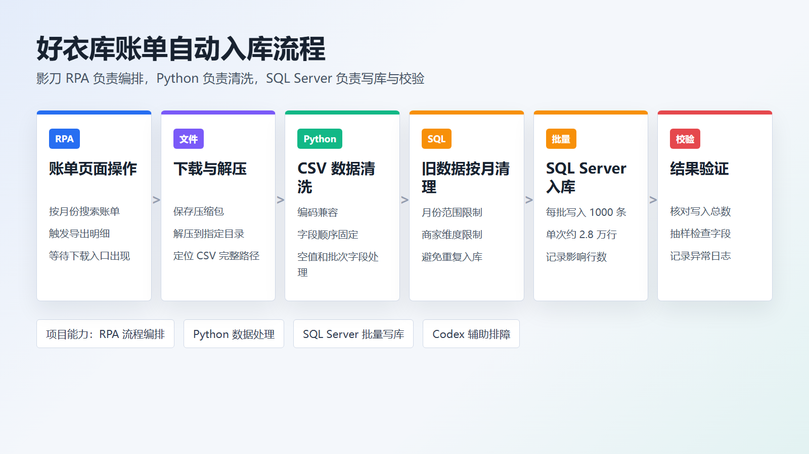
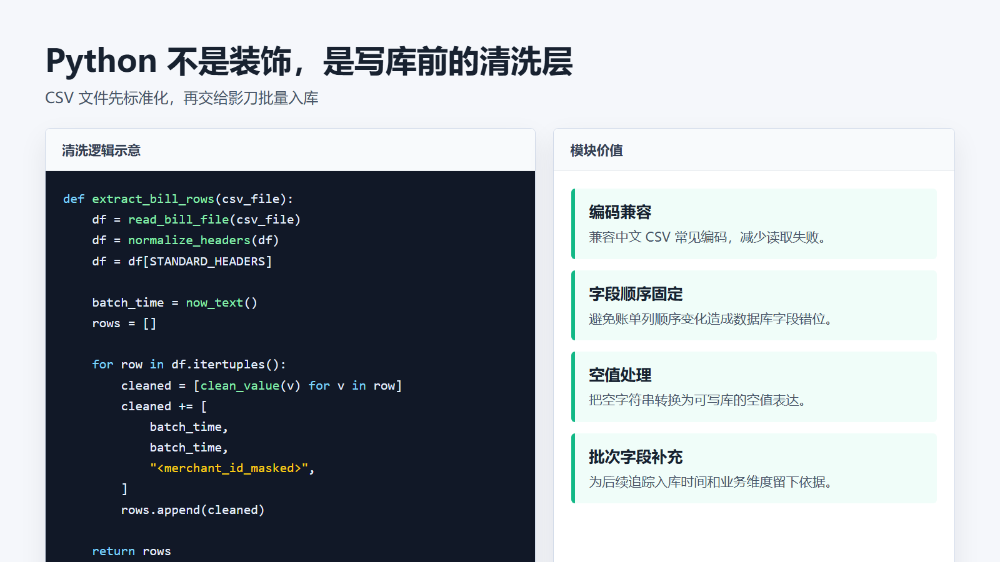

账单下载与流程编排
展示账单页面、影刀主流程、下载流程和自动化任务设置。
阅读记录业务需要定期从网站导出月账单，再写入 SQL Server 供后续核对和统计。人工处理要等待导出、下载压缩包、解压 CSV、清洗字段、清理同月旧数据并核对写入结果，步骤多且容易重复。
本项目属于 RPA + Python/SQL 自动化 + AI 辅助排障。网页操作和文件流转适合影刀 RPA，数据清洗与结构处理交给 Python，数据库写入和核对由 SQL Server 承担。
Flow
先把账单文件拿稳，再把数据清洗稳，最后才进入写库和结果核对。

独立梳理账单下载到入库的完整业务流程，拆出目标月份变量、下载路径变量和写库结果变量，编排影刀主流程与子流程，接入 Python 清洗模块，并排查文件路径、字段映射、占位符兼容和重复执行风险。
完成网站账单导出、下载解压、CSV 定位、Python 标准化清洗、SQL Server 按边界批量写入和结果核对，沉淀了账单类 RPA 写库模板，单次处理约 2.8 万行数据。
Implementation
页面截图、清洗说明和写库风控图共同说明这个项目不是纯点击录制。



Records
按下载、清洗、写库三段拆开阅读，更容易看到流程边界和验证方法。
解压结果先拿到目录而不是 CSV 文件、路径对象不能直接交给 Python、日志窗口对大对象显示不全、SQL 占位符与组件适配方式不同。
数据库旧数据处理必须带月份范围和业务维度，正式环境先查命中数量，再执行变更并保留结果日志。
借助 Codex 辅助拆解流程、整理 Python 与 SQL 思路、分析报错和沉淀文档；业务判断和风险边界仍由自己确认。